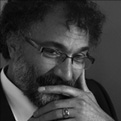

Sinan Özbek
1961’de Erzurum’da doğdu. İlk ve orta öğrenimini Erzurum’da tamamladı. İÜ Edebiyat Fakültesi Felsefe Bölümü’nde yüksek öğrenime başladı. Öğrencilik yıllarında gazetecilik yaptı. Yüksek lisansını aynı bölümde tamamladı ve yine aynı programda doktora öğrencisi oldu. Doktora yeterlilik sınavını verdikten sonra Almanya’ya gitti. Çeşitli işlerde çalıştı. Volkshochschule’de dersler verdi ve Goethe Üniversitesi’nin felsefe derslerini takip etti. 1993’te İstanbul Üniversitesi’nden felsefe doktoru unvanı aldı. 1996’da Kocaeli Üniversitesi Felsefe Bölümü’nün kurulması amacıyla Türkiye’ye döndü. 1997’de felsefelogos dergisini çıkarmaya başladı ve genel yayın yönetmenliğini üstlendi. 2007’de 1959’dan beri yayımlanan felsefe dergisi Das Argument’in bilim kuruluna seçildi. 2009’da Felsefe ve Sosyal Araştırmalar Topluluğu Derneği’nin (FESATODER) kuruluşunda yer aldı ve başkanı oldu. Halen Kocaeli Üniversitesi Felsefe Bölümü başkanıdır.
